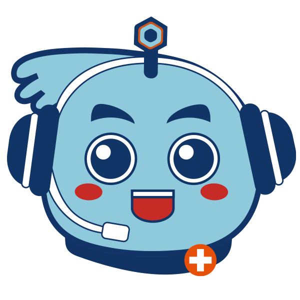
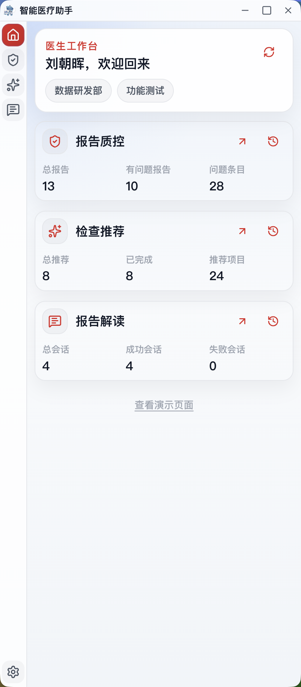

Product Gallery
真实界面，所见即所用
以下均为 RimagAI Brother 2.0 客户端实际运行截图

边缘悬浮球贴边收起，不占阅片屏幕空间；鼠标触碰即滑出控制条

客户端页面全功能控制面板

i-CDSS 检查推荐综合主诉病史给出影像检查方案与诊断依据
🎯 Top-3 符合率 93%+
基于院内真实病例与医保规则训练，推荐贴合科室实际需求。
💡 自动提取主诉病史
屏幕 OCR 或语音输入均可，无需手动输入，秒级给出推荐。
🛡️ 医保合规保障
内置医保审核规则，降低拒付风险，为医生决策提供可溯依据。
Report QC 实时质控提交前自动核查，标注问题位置与建议修改
🔍 三重核查机制
书写错误、逻辑一致性、专业复核三层叠加，报告质量有保障。
⚡ 极低误报设计
医疗场景专属模型，避免频繁打扰医生正常工作流程。
🔒 本地推理可选
质控模型支持院内私有化部署，报告内容完全不离开院内网络。

医学知识库问答接入权威临床指南，自然语言提问、结构化可溯源答复
📖 权威文献来源
接入国内外临床指南、循证医学文献及科室内部知识库。
💬 侧边栏即问即答
不离开当前工作窗口，侧边栏直接提问，答案带出处编号。
🏥 院内私有知识
支持接入医院自有指南、SOP 文件，构建科室专属知识代理。